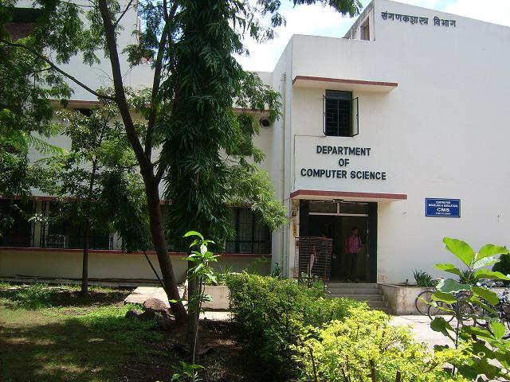

About
The Pune University, Computer Science Department(PUCSD) University of Pune is a teaching department that aims at providing quality education in Computer Science. As with any education institution, students give the department a dynamic character and an active culture towards Computer Science, guided by their faculty. Apart from teaching postgraduate level Computer Science, the faculty is also involved in research, consultancy and development programs. The support structure of the department provides all the required non-academic support to the students and the faculty.
Details of most of our activities can be found on this site. PUCSD takes care to ensure that the basic scientific principles of Computer Science are presented to the student and actively tries to point out the differences between the Computation as a science and software. Our mission statement elucidates this point further. Another characteristic academic experience at PUCSD for the student is the almost lack of any divide between Computer Science theory and practice. We try our best to maintain a 24x7 availability of our resources.
Our Educational Mission
Today Information Technology has become pervasive, while its parent, Computing Science, has become hard to find. Instead of becoming specialty providers for the IT industry or mass producers of vocationally trained personnel, our Department has chosen to take the road less travelled. We continue to emphasize the pristine science that lies under the diverse aspects of computing. This is the single most important feature of the education offered here.
There are several ways to present the canonical core of computing science. Over the years we have developed a distinctive style and method that bridges the theory-practice divide while remaining grounded in the core. Technology changes rapidly, especially in the field of computing, whereas the science, if it changes at all, does so much more gradually. Those who are clear and thorough about the fundamentals can adapt to rapid changes in technology relatively easily. We want the education imparted to our students to be the basis of a lifetime of learning.
We are committed to the free software and open source movements, as typified by Linux. We believe that reading and modifying open source code is an extremely good learning tool and an effective initiation into the culture of practical software development.
We have a large Departmental library accessible to all students. Jayakar Library, the central University library, has a very large and varied collection of books and journals.
Student-teacher relations are informal and friendly. A lack of hierarchy is very much a part of our tradition. Alumni teach many of our courses, motivated by a sense of gratitude for a place that has given them their education, and some of them are prized as our best teachers.
History
Our Department is one of the earliest CS Departments started in Indian Universities. Back in 1980, when computer science was little known and the word IT didn't exist, a one-year programme was started towards the B.Sc.(Applied) degree in Computer Science. The M.C.A. programme was launched in 1983, the M.Tech. degree programme in 1985, and the one year B.Sc.(Applied) programme was upgraded to a two year M.Sc. in Computer Science in 1986.